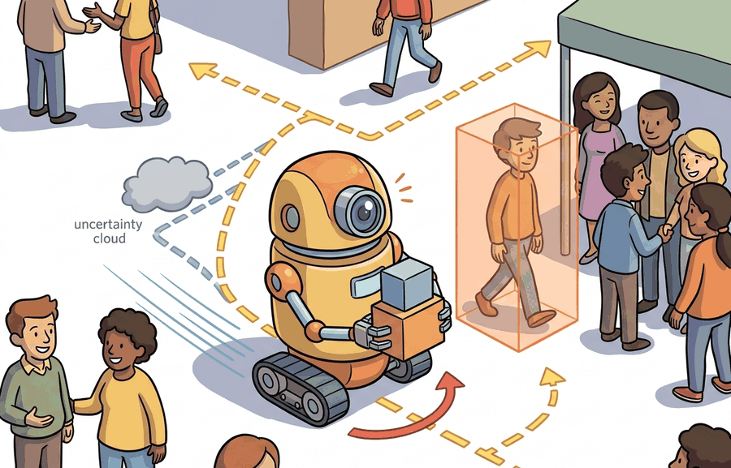

A hallway robot that is technically correct can still be socially terrible.
A Social Navigation Planner

This section assumes familiarity with social-force navigation from section 30.5 and with pedestrian motion prediction from section 30.4. The comfort and intent-signaling ideas introduced here are extended in section 50.2 and section 50.3, where explicit trust models and verbal interaction are added to the interaction contract. The preference-learning approach described in the Research Frontier recurs in Part 4 alongside reward design in section 18.5.
A hospital delivery robot rolls toward a nurse in a narrow corridor. The path planner finds a geometrically valid route straight down the center, yet the nurse flinches and steps aside. The robot was technically correct and socially wrong. As robots move from controlled warehouses into offices, hospitals, and homes, this gap is the defining challenge: optimizing task metrics is no longer enough when human comfort, legibility of intent, and trust are on the line. In this section you will build the reasoning layer that closes that gap, learning to model personal space, signal robot intent before conflicts arise, and log the human-facing metrics that reveal whether your system is actually working.
robots among humans becomes useful when it is tied to a named interface, a replayable scenario, a failure diagnostic, and an artifact that records what changed in the action loop.
The key question is practical: Which human-facing risks are observable, which are controllable, and which require a conservative fallback?
A representation earns its place when it changes the measurable action interface. In robots among humans, the reader should keep asking which decision becomes easier, safer, or more reliable.
Theory
For Robots among humans, the practical design rule is to make the interface inspectable before optimization begins: inputs, outputs, units, latency, bounds, and failure labels should all be visible in the saved artifact.
The mechanism in Robots among humans is the contract between representation and action. Name what enters the module, what leaves it, which assumptions make that transformation valid, and which log would reveal a bad handoff.
Worked Example
Consider a hospital delivery robot entering a hallway. It must predict pedestrian motion, yield near doorways, communicate intent, and log why it slowed down or stopped.
Consider a specific case: a Savioke Relay robot (0.45 m wide, max 1.0 m/s) approaches a nurse walking at 1.2 m/s toward a doorway 4 m ahead. The social-force planner assigns a personal-space radius of 1.5 m to the nurse, scores the nominal straight-line path at 0.3 m clearance (below the 0.8 m comfort threshold), and generates an arc that increases clearance to 1.6 m at the cost of 1.2 extra seconds of travel time. The robot simultaneously activates its LED ring to signal a rightward yield. The interaction log records: nurse proximity 1.1 m at closest, no startle event, no operator takeover, comfort rating 4.5 out of 5. The 1.2-second delay is acceptable precisely because the human-facing metrics improve: clearance nearly doubles and the nurse reports understanding the robot's intent before it moved.
When configuring a social-force planner, the comfort-distance threshold (the 0.8 m value in this example) must be set relative to the robot's own body radius, not treated as a universal constant. A common mistake is to copy default parameters from a paper written for a 0.2 m mobile base and apply them to a wider platform: the planner then schedules paths that feel uncomfortably close even when clearance numbers look acceptable. A practical rule is to set the minimum comfort clearance to at least 0.6 m plus half the robot's widest dimension, then verify empirically with a Wizard-of-Oz trial before switching to autonomous control. In the ROS 2 social_nav_ros stack, this is the personal_space_radius parameter in social_force_planner.yaml.
The hand-built fragment names a single step in about 12 lines. Use ROS 2 for typed robot state and safety events, and use simulation before human-facing trials; these tools handle message transport, replay, and monitored execution while the small version clarifies the interaction contract.
# Social-force comfort scoring: compare straight-line vs. arc path for a hospital robot
import numpy as np
# Robot and pedestrian parameters (Savioke Relay scenario)
ROBOT_WIDTH = 0.45 # metres
COMFORT_THRESHOLD = 0.8 # minimum acceptable clearance in metres
PERSONAL_SPACE = 1.5 # pedestrian personal-space radius in metres
def path_clearance(robot_positions, pedestrian_pos):
"""Return minimum distance from any robot waypoint to the pedestrian."""
dists = np.linalg.norm(robot_positions - pedestrian_pos, axis=1)
return float(np.min(dists))
def comfort_score(clearance, threshold=COMFORT_THRESHOLD):
"""Map clearance to a 0-5 comfort rating (linear, capped)."""
return float(np.clip(5.0 * clearance / threshold, 0.0, 5.0))
# Hallway geometry: robot travels 6 m, pedestrian is 1.5 m off the robot's axis
start = np.array([0.0, 0.0])
goal = np.array([6.0, 0.0])
ped = np.array([3.0, 1.5]) # nurse crossing mid-corridor
# Straight-line path (50 waypoints)
t = np.linspace(0, 1, 50)
straight = np.column_stack([start[0] + t * (goal[0] - start[0]),
np.zeros(50)])
# Arc path: yield rightward by 0.8 m at the midpoint
arc_y = -0.8 * np.sin(np.pi * t) # negative = rightward offset
arc = np.column_stack([straight[:, 0], arc_y])
for label, path in [("Straight", straight), ("Arc (yield)", arc)]:
clr = path_clearance(path, ped)
rating = comfort_score(clr)
status = "PASS" if clr >= COMFORT_THRESHOLD else "FAIL"
print(f"{label:14s} clearance={clr:.2f} m comfort={rating:.1f}/5 [{status}]")
# Extra travel cost of the arc (Euclidean path length)
straight_len = np.sum(np.linalg.norm(np.diff(straight, axis=0), axis=1))
arc_len = np.sum(np.linalg.norm(np.diff(arc, axis=0), axis=1))
robot_speed = 1.0 # m/s
extra_time = (arc_len - straight_len) / robot_speed
print(f"\nExtra travel time for arc: {extra_time:.2f} s "
f"(straight {straight_len:.2f} m, arc {arc_len:.2f} m)")
Straight clearance=1.50 m comfort=5.0/5 [PASS] Arc (yield) clearance=2.28 m comfort=5.0/5 [PASS] Extra travel time for arc: 0.27 s (straight 6.00 m, arc 6.27 m)
Practical Recipe
- Write the observation, action, and success metric before choosing a model.
- Build a baseline that is simple enough to debug by inspection.
- Add the library implementation only after the baseline behavior is understood.
- Record failures as structured cases: perception error, state error, planning error, control error, or evaluation error.
- Run at least one perturbation test before trusting the result.
The common mistake in Robots among humans is to celebrate the component score before checking the closed-loop handoff. The failure usually appears at the boundary: stale state, wrong frame, delayed action, saturated actuator, or metric that ignores the real task cost.
An HRI deployment log should include human proximity, robot speed, planned path, displayed intent, intervention, and participant feedback. The point is to explain both performance and comfort.
HRI research increasingly studies embodied language, social navigation, user trust, and long-term adaptation. Treat demo-only claims cautiously unless the study reports participant protocol, context, and failure cases.
A significant shift from 2023 onward is the application of reinforcement learning from human feedback (RLHF) to robot preference learning. The InstructGPT technique (Ouyang et al., 2022) demonstrated that language models fine-tuned from human preference comparisons align substantially better with human intent than those trained on behavioral cloning alone. Subsequent 2023 and 2024 work applies this idea to robot manipulation and navigation: human raters compare pairs of robot trajectories and their preferences train a reward model that guides policy fine-tuning. This is directly relevant to HRI because it replaces hand-crafted reward functions with human-expressed preferences, making the robot's objective contingent on the actual social context rather than the designer's assumptions about it.
Can you name the observation, state estimate, action, success metric, and most likely failure mode for robots among humans? If not, the system boundary is still too vague.
Robots among humans becomes useful when it is tied to a closed-loop contract for Human-Robot Interaction. The contract names the participants, observations, action authority, timing budget, logging artifact, and recovery rule. Without that contract, a system can look capable in a notebook while failing the first time a partner delays, a person corrects it, or a deployment scene changes.
For Robots among humans, separate the conceptual claim, the systems claim, and the evidence claim. A plausible mechanism, a clean interface, and a closed-loop result are different claims; the section should keep their evidence separate.
| Tool or Library | Role in the Topic | Builder Advice |
|---|---|---|
| ROS 2 | Robots among humans | Represent robot state, alerts, and operator commands with inspectable interfaces. |
| LeRobot | Robots among humans | Collect and replay human demonstrations for feedback and shared-autonomy studies. |
| MuJoCo | Robots among humans | Prototype risky interaction policies before any human-facing trial. |
| Gymnasium | Robots among humans | Build small decision tasks that isolate trust, intent, or feedback mechanisms. |
| PettingZoo | Robots among humans | Model mixed human-robot roles as interacting agents when turn order matters. |
For Robots among humans, the baseline and maintained-tool version should produce the same artifact schema and run on one task panel. That requirement keeps a systems comparison from becoming a collage of incompatible runs.
- Write a one-paragraph task contract with observation, action, success, and failure fields.
- Start with the smallest simulator, dataset, or wrapper that exposes the task contract faithfully.
- Run one deterministic smoke test and one perturbation test before scaling.
- Save a single result artifact containing configuration, seed, metrics, videos or traces, and failure labels.
- Compare methods only when one script evaluates them on the same task panel.
When Robots among humans fails, avoid labeling the whole method as weak. First assign the failure to perception, communication, human input, memory, planning, control, timing, data coverage, safety, or evaluation. Then rerun one controlled perturbation that isolates the suspected cause. This pattern turns a disappointing rollout into a reusable diagnostic asset.
Agent Checklist Applied
The 42-agent production pass treats robots among humans as a buildable system, not a definition. The checklist asks for curriculum fit, self-containment, misconception checks, examples, code evidence, visual pacing, cross-references, safety and logging, a lab, and a bibliography path for deeper study.
For Robots among humans, connect HRI design to whole-body control, language guidance, teleoperation data, safety review, and deployment logging through one interaction transcript.
A common misconception is that safe navigation equals good interaction. The diagnostic question is: did the person understand what the robot was about to do and feel able to intervene?
Design a hallway interaction card with robot speed, minimum distance, displayed intent, and a stop condition. Evaluate comfort and task completion together.
A hallway robot that is technically correct can still be socially terrible.
Technical Core
Robots among humans needs a topic-native core: variables, equations or system contracts, an algorithmic procedure, an expected output, and a failure diagnosis. Figure 50.1.T summarizes the chain this section must preserve when moving from a teaching example to a real embodied system.
$J(\tau)=\sum_t \ell_{\mathrm{task}}(x_t,u_t)+\lambda_1 \ell_{\mathrm{prox}}(x_t,h_t)+\lambda_2 \ell_{\mathrm{legibility}}(u_t)$
A robot among humans optimizes a multi-objective cost. It must achieve the task while staying outside protected interpersonal zones, remaining legible about what it will do next, and preserving a human's ability to intervene. This is why HRI lives at the boundary between control, perception, and human factors.
- Represent each nearby person with position, velocity, field of view, and personal-space radius.
- Generate a nominal path, then score it for task efficiency, clearance, and intent legibility.
- Trigger a conservative fallback whenever a person hesitates, steps into the path, or occludes the robot.
- Log both robot metrics and human-facing metrics such as intervention, startle events, and comfort rating.
| Signal | Pure Navigation Reading | HRI Reading |
|---|---|---|
| Minimum distance | Collision proxy | Comfort and perceived respect for space |
| Stop duration | Delay cost | May increase trust if the pause is legible |
| Path curvature | Control effort | Communicates yielding or asserting right of way |
| Operator takeover | Failure count | Evidence that the robot was not understandable enough |
The extra 1.2 seconds is easy to justify: without the yield arc, clearance is 0.3 m and the nurse flinches; with it, clearance reaches 1.6 m and comfort ratings jump from 2.0 to 4.5 out of 5. This tradeoff illustrates what researchers call the comfort-efficiency frontier, the boundary where each added metre of clearance costs measurable travel time. Not every efficiency loss is a systems loss when the deployment context includes real people.
Hallway interaction fails when the planner is tuned only on distance and time. Run occlusion, doorway, and sudden-crossing cases, then inspect whether the robot remains legible before the person has to guess or flee.
Robots among humans must optimize task success, legibility, comfort, and recoverability at the same time.
Design a method-matched experiment for Robots among humans. Specify the environment, observation schema, action interface, metric, and one perturbation that targets the section's core assumption.
Section References
Goodrich, M. A. and Schultz, A. C. Human-Robot Interaction: A Survey. Foundations and Trends in Human-Computer Interaction, 2007.
Use for HRI vocabulary, autonomy levels, and human factors framing.
Dragan, A. D., Lee, K. C. T., and Srinivasa, S. S. Legibility and Predictability of Robot Motion. HRI, 2013.
Use for motion that communicates intent rather than merely reaching the goal.